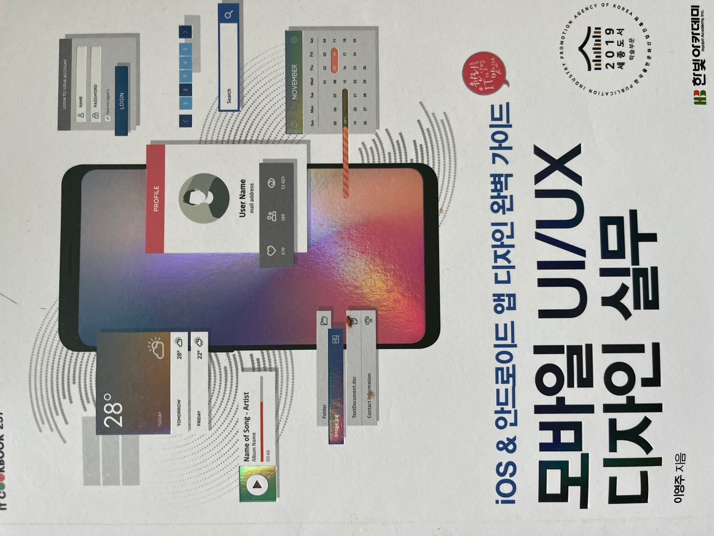

과
목
소
개
컴퓨터 정보공학과 1학년 1학기
(과목소개 홈)
ui/ux.....
: UI (USER INTERFACE) UI는 사용자가 제품/서비스를 사용할 때, 마주하게 되는 면 입니다. UX (USER EXPERIENCE) UX는 사용자 경험의 약자로, 사용자가 어떠한 서비스/ 제품을 직간접적으로 이용하면서 느끼는 종합적인 만족을 의미합니다.
엄은영 교수님
이 수업하셔서 매우 재밌는 수업입니다.
열심히 배워서 저만의 앱을 디자인하고 싶습니다..
